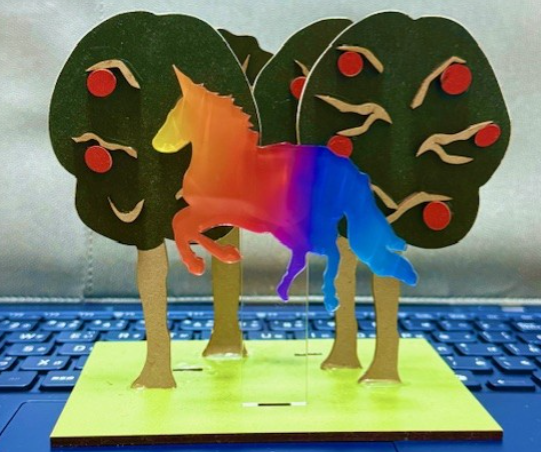

最終課題
製作したものときっかけ
今回の最終課題で私は、自分の好きなアーティストのジャケ写風のアクリルスタンドを作りました。
きっかけは最近そのアーティストのライブへ行き自分だけのオリジナルのグッズが欲しいと思ったからです。
使用したもの
ただ単にアクリルスタンドを作るのではなく、立体にして全体をいきいきさせたいと思い部品ごとにカットすることにしました。
また木の質感やユニコーンの雰囲気なども再現したかったため素材を変えるなどの工夫もしました。

実際に完成してみて立体感を出すことができて良かったです。
反省点としては木のサイズが少し大きくなってしまったためバランスをもう少し調整出来たらよかったと思いました。
反省点はありましたが自分だけのオリジナルのアクリルスタンドが完成したので部屋に飾りたいと思います。